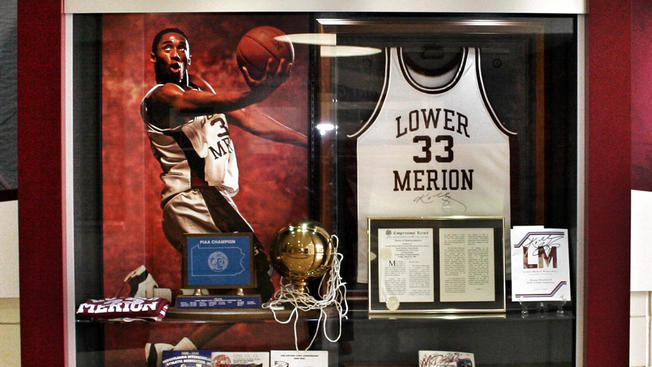
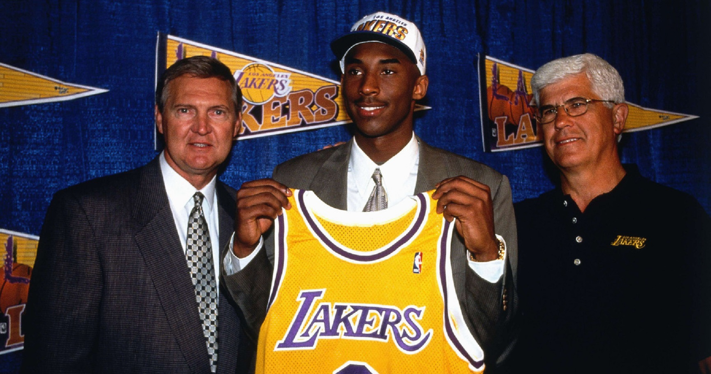

Kobe's Childhood
 Kobe 'Bean' Bryant was born on August 23, 1978, in Philadelphia, Pennsylvania. His father was Joe Bryant, a former Philadelphia 76ers player. He was pushed by his father from an early age to take up basketball.
He started playing basketball at the age of 3, and his favourite team was the Lakers.When Bryant was six, his father left the NBA and moved his family to Rieti in Italy to continue playing professional basketball.
Bryant became accustomed to his new lifestyle and learned to speak fluent Italian. During summers, he would come back to the United States to play in a basketball summer league.
Kobe 'Bean' Bryant was born on August 23, 1978, in Philadelphia, Pennsylvania. His father was Joe Bryant, a former Philadelphia 76ers player. He was pushed by his father from an early age to take up basketball.
He started playing basketball at the age of 3, and his favourite team was the Lakers.When Bryant was six, his father left the NBA and moved his family to Rieti in Italy to continue playing professional basketball.
Bryant became accustomed to his new lifestyle and learned to speak fluent Italian. During summers, he would come back to the United States to play in a basketball summer league.
Kobe highschool Life
Bryant earned national recognition during a spectacular high school career at Lower Merion High School located in Ardmore, Philadelphia. He became the first freshman in decades to start for Lower Merion's varsity team, but the team finished with a 4-20 record. The following three years, the Aces compiled a 77-13 record, with Bryant playing all five positions. During his junior year, he averaged 31.1 points, 10.4 rebounds and 5.2 assists and was named Pennsylvania Player of the Year, attracting attention from college recruiters in the process. Duke, Michigan, North Carolina and Villanova were at the top of his list; however, when Kevin Garnett went in the first round of the 1995 NBA draft, he began considering going directly to the pros.
Getting started in the league
Bryant’s father, Joe (“Jelly Bean”) Bryant, was a professional basketball player who spent eight seasons in the NBA and eight more playing in Italy, where Bryant went to school. When his family returned to the United States, Bryant played basketball at Lower Merion High School in Ardmore, Pennsylvania, where he received several national Player of the Year awards and broke the southeastern Pennsylvania scoring record set by Wilt Chamberlain with 2,883 points. Bryant opted to forgo college and declared himself eligible for the NBA draft when he graduated from high school. The Charlotte Hornets chose him with the 13th pick of the 1996 draft. He was traded to the Lakers shortly thereafter and became the second youngest NBA player in history when the 1996–97 season opened. He quickly proved his merit with the Lakers and was selected for the NBA All-Star Game in just his second season, becoming the youngest All-Star.
A New Challenge
 After dropping hints that his time with Real was coming to an end, Ronaldo confirmed the rumors in July 2018 by signing with Italian Serie A club Juventus, which paid a $140 million transfer fee to his old Spanish club.
Ronaldo paid tribute to Real fans in an open letter on the club's website, writing: "These years at Real Madrid and in this city of Madrid have quite possibly been the happiest years of my life. I only have feelings of great gratitude to this club, to the fans and to the city. I can only give thanks to all of them for the love and affection that I have received."
By most measures, Ronaldo's debut season with Juventus was a successful one. He scored 10 times in his first 14 games, and headed home the lone goal in a win over AC Milan for the Supercoppa Italiana trophy. After leading his club to its eighth consecutive Serie A title, he was named the league's MVP in May 2019.
After dropping hints that his time with Real was coming to an end, Ronaldo confirmed the rumors in July 2018 by signing with Italian Serie A club Juventus, which paid a $140 million transfer fee to his old Spanish club.
Ronaldo paid tribute to Real fans in an open letter on the club's website, writing: "These years at Real Madrid and in this city of Madrid have quite possibly been the happiest years of my life. I only have feelings of great gratitude to this club, to the fans and to the city. I can only give thanks to all of them for the love and affection that I have received."
By most measures, Ronaldo's debut season with Juventus was a successful one. He scored 10 times in his first 14 games, and headed home the lone goal in a win over AC Milan for the Supercoppa Italiana trophy. After leading his club to its eighth consecutive Serie A title, he was named the league's MVP in May 2019.
Life after the game
 On August 27, 2021, it was announced that Ronaldo would return to Manchester United. His Return so far has lead to 10 goals and 2 assists in 14 matches at the time of writing.
Cristiano Ronaldo is showing that even at the age of 37 he is still one of the best and contributing at a very high level.
On August 27, 2021, it was announced that Ronaldo would return to Manchester United. His Return so far has lead to 10 goals and 2 assists in 14 matches at the time of writing.
Cristiano Ronaldo is showing that even at the age of 37 he is still one of the best and contributing at a very high level.